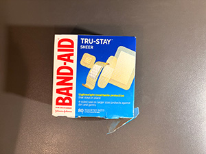
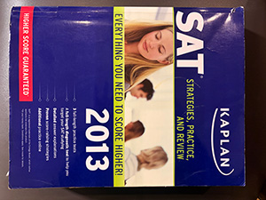
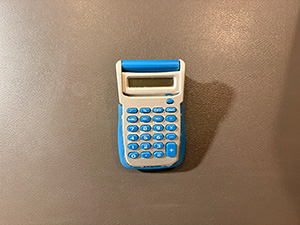
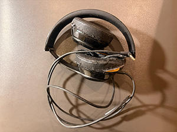
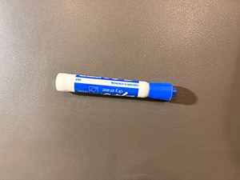
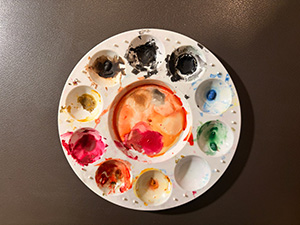
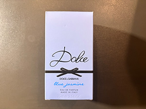
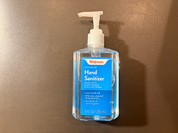
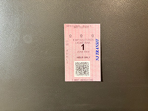

I decided to record and share each week of my trash because it allows me to understand my daily habits and the patterns of consumption that shape my everyday life. Trash is something most people try not to think about once it leaves the house, but it actually contains a detailed record of how we live. The packaging from food, receipts, empty containers, and other discarded items are reflections of our routines and choices.
I cleaned out my desk this week. I like to keep my work and leisure spaces pretty separate, so I don't often work on my desk. As a result, I usually end up treating my desk like an extra storage space… but not anymore! I have sorted out the drawers and put all the clutter on top into its proper positions. I predict that I have a week before it assumes its previous state. Either way, I found some interesting things in there, and by interesting things I mean “things that ought to have been thrown out years ago.”
This week's trash can be loosely grouped into three main categories— self-care and hygiene, education, and art. My medicine bag was shoved into one of my drawers, so I ended up throwing out a couple of things related to health, like an empty box of bandaids, and an expired bottle of hand sanitizer. Side note, this cleaning has reminded me that I really need to head to CVS and get some more medicine. I don't even have Advil in there. I also tossed an empty box that once held a perfume I bought a few weeks ago. (This one!)
The second group is art-related. which consists of a plastic paint palette and a dried out expo marker. The paint palette is the cheapest, thinnest plastic I could find during Joann's closing sale. I have a giant stack of these, which is why I felt comfortable throwing this one out. I've been feeling uninspired when it comes to painting lately, though. When I think of my best paintings, they were all done before I got these palettes. It's kind of embarrassing, but I used to use the packaging of an empty Ferrero Roche box. It worked surprisingly well. The plastic was waterproof, so my watercolors didn't soak into it, and the little cups let me mix all the colors I needed to. Maybe I need to go back to that.
As for the marker, I keep my dry-erase markers in a little bucket that I'm pretty sure is supposed to be a flower pot. I decided to test them while I was cleaning, and found that the blue one no longer worked. I must have left the cap open or something. I guess I'll be writing all my reminders in pink for the foreseeable future.
The final group is education. I've got an old barebones calculator that I have never used and I am fairly certain is older than me, a train ticket from when I came back to campus after the weekend, an old SAT book that my dad picked up at a garage sale years ago, and an old pair of Beats headphones.
Of these, the headphones were the hardest to say goodbye to. My laptop has both Linux and Windows installed, and I use both operating systems for different things; for instance, I play games on Windows but do most of my schoolwork on Linux. However, there's a strange glitch that happens whenever I try connecting my wireless earphones to it: it makes the other operating system no longer recognize the device. Every time I want to use my earphones on one operating system after using it on the other, I have to delete the earphones, restart the computer, and then restart the computer. This is a hassle, so I started using an old wired pair instead. However, I think it's time to say goodbye. They're peeling pretty bad, and the foam on the inside is visible.

a bright blue box of bandaids

a large and heavy indigo SAT prep book

a very old and small gray plastic calculator

a pair of black headphones with yellow foam showing

a blue Expo dry-erase marker

a round plastic paint palette with different colors of dried watercolor in each pocket

a periwinkle perfume box made of cardstock

a transparent plastic bottle of CVS hand sanitizer with a blue label

a tiny pink train ticket with a QR code at the bottom
| Name | Weight | Source | Location | Cost | Owned | Attachment | Mode |
|---|---|---|---|---|---|---|---|
| Bandaid Box | 20g | CVS | Medicine Box | $2 | 1 year | 2 | |
| Hand Sanitzer | 300g | CVS | Medicine Box | $3 | 3 years | 1 | |
| Perfume Box | 50g | Macy's | Desk Top | $150 | 1 month | 4 | |
| Palette | 100g | Joann's | Desk Drawer | $2 | 8 months | 4 | |
| Expo Marker | 100g | Costco | Desk Drawer | $0.50 | 6 months | 2 | |
| Calculator | 100g | Unknown | Desk Drawer | Unknown | Unknown | 1 | |
| SAT Book | 2lbs | Garage Sale | Desk Drawer | $5 | 10 years | -100 | |
| Train Ticket | 1g | NJTransit | Desk Top | $16.50 | 1 day | 1 | |
| Headphones | 700g | BestBuy | Desk Drawer | $150 | 3 years | 5 |
I made some tough decisions on what to toss and what to keep this week, but it resulted in a neater desk and some much-needed peace of mind. As always, thank you very much for reading! If there was anything you found particularly interesting, feel free to comment, and I will see you all next week for another Trash of the Week.